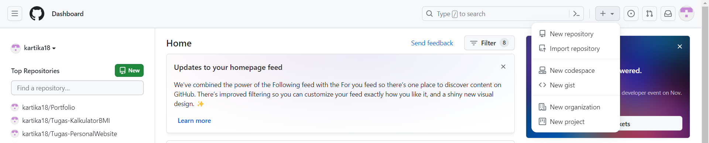
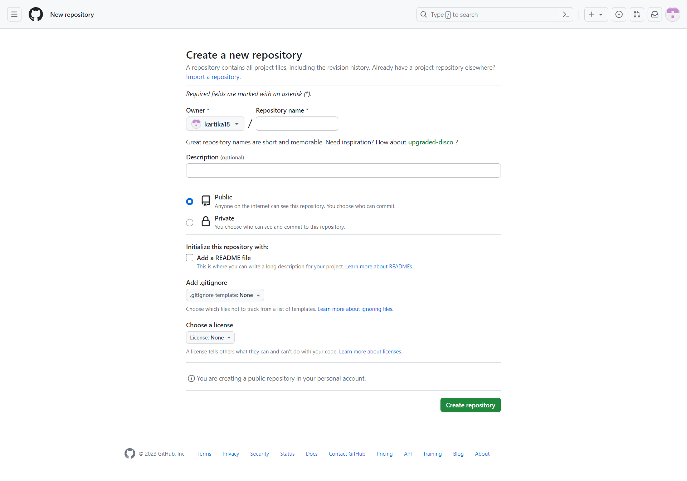
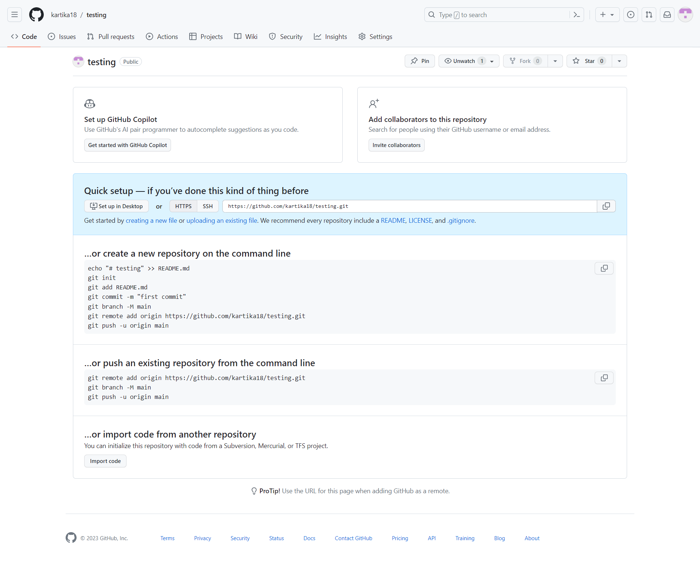
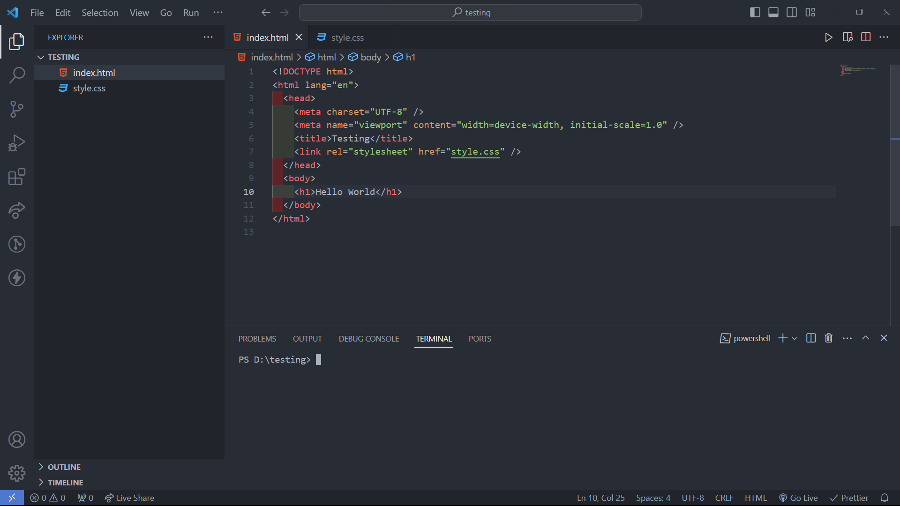
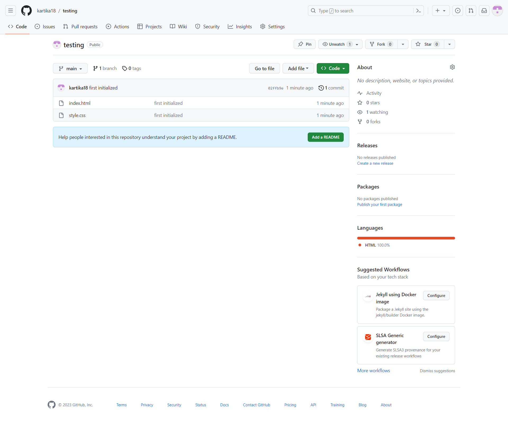

Work On GitHub!

Kartika Sari
Oct 1, 2023

13.28

120

2
GitHub is a famous platform that's been used by software developer all around the world. GitHub provides a wide range of tools and services for managing software projects, collaborating with teams, and storing source code centrally.
These are some of the great features of GitHub.
-
Version Control
GitHub is based on the Git version control system, which allows developers to track changes in source code. This make easier for developers to collaborating with their team and managing project code eficiently.
-
Repository
GitHub provide a store that called "repository" for project source code. Every project has their own repository.
-
Collaboration
Developers team can collaborate in one repository GitHub. They can contribute to write the code, pull request, review other team member's code, and discuss things through comment section.
-
Issue Tracker
GitHub also has a tracker to track problems so that the team can report, track, and handling the problem or task that needs to be done.
-
GitHub Pages
GitHub pages is a hosting service that developers use to create statistics websites from their GitHub repositories. This is very useful for creating a project or a blog documentation.
-
Integration
Jenkins, Travis CI, and Docker are some of the services that have strong integration with GitHub. This allows automation and continuation testing for the process of developing software.
-
Open Source
GitHub has so many software project that is open source or it's accessible to anyone.
NOTE!
Git and GitHub is different. Git runs locally, but
GitHub runs on the internet. Also to help better understanding, just
think as like Git is a tool and GitHub is a service that using that
tool.
Next, I'm gonna show you how to store your project source code from local computer to repository on GitHub. We will use VSCode and GitHub Repository in here.
- Open GitHub on your browser and Sign Up or Log In.
-
Create New Repository
 -
For beginner, just fill the name of repository that appropriate with your project. After that, click "Create Repository".
 -
Then, you will see this.
 -
Afterwards, follow the command line that said "create new repository on the command line" one by one in the Terminal on VSCode. The terminal on VSCode looks like this.
 -
For your information, I usually use these steps to push my code to
GitHub.
-
For the first time of pushing to GitHub
git initgit add .git commit -m "message"-
git remote add origin linkRepositoryGitHub git branch -M maingit push -u origin main
-
Second time and so on
- git add .
- git commit -m "message"
- git push
-
For the first time of pushing to GitHub
-
After you write your code and used the terminal to push your code to GitHub Repository, it will look like this if your success.
 - Now you're done!
So, that's all I can give you!
I hope this simple article can give you more understanding about
GitHub. If you have something to say, don't hesitate to contact me
through
this!
Thank you so much~~